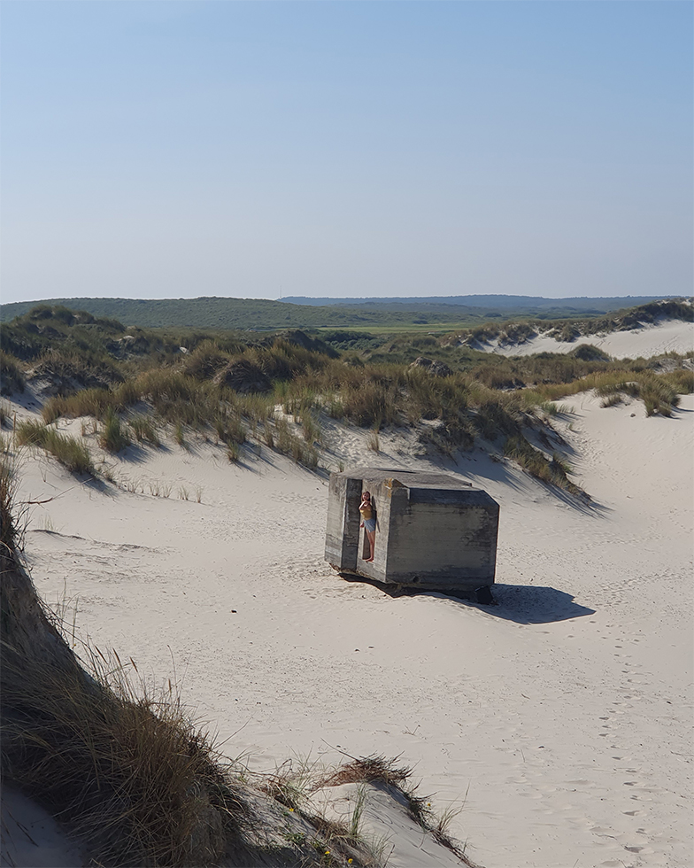

A Lone Survivor
I made this artwork while being in Germany for a few days. The inspiration of the composition is a picture I took of a friend of mine while we were out drawing in the dunes of Terschelling. I made a couple of sketches strengthening the “forced perspective” and creating a story of a scavenger in a (post-apocalyptic?) dune landscape where massive wind turbines break up the horizon. Can you feel the salty wind on your face and dry sand beneath your feet?
